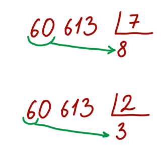

Это будет очень короткая глава, потому что я не знаю никих способов упростить деление (кроме одного - надо хорошо овладеть умножением).
Можно разве что потренироваться прикидывать разрядность ответа: например, поделим 60613 на 7. Первая цифра ответа 8 → надо начинать произносить "восемь тысяч...", поскольку число будет явно четырехзначным
Если бы мы делили это же число, например, на 2, то тогда бы мы начали произносить ответ "тридцать тысяч...", поскольку число будет явно пятизначным
